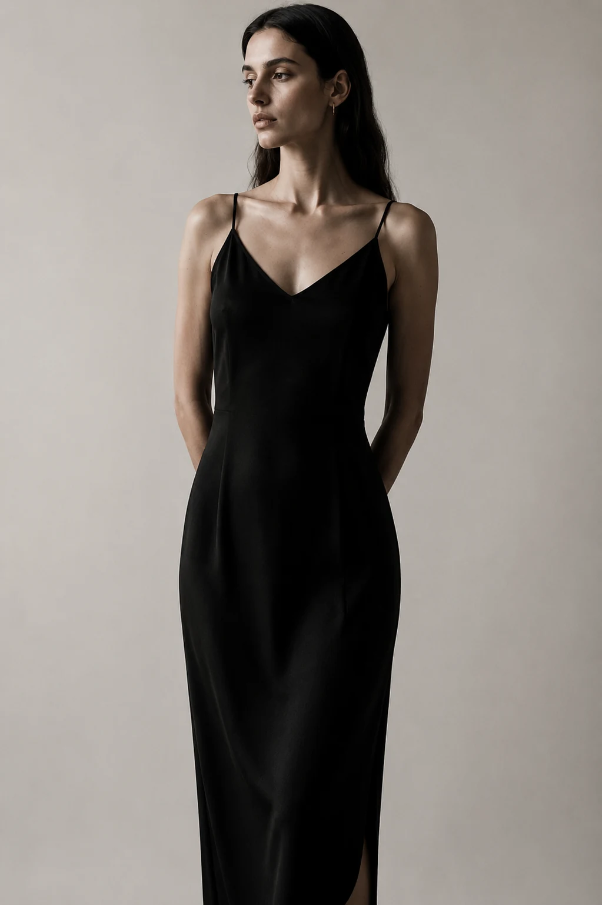
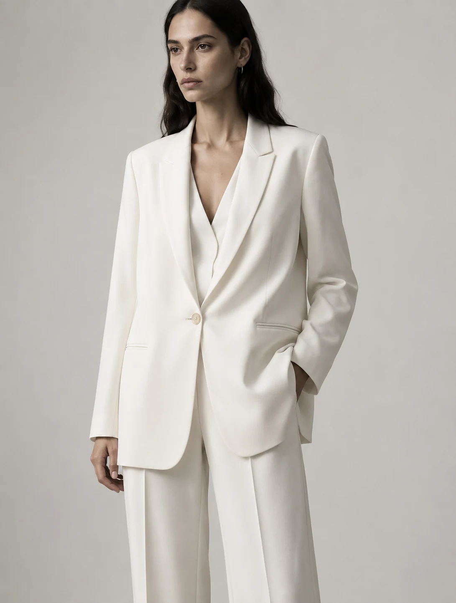

Look 01
Quiet Tailoring
Blazer · Trousers · Slingbacks
SORA / 2026
New Editorial
A study in quiet confidence, precise tailoring and enduring form.
Shop Collection ↗Free ShippingOn orders over $150
Easy Returns30-day return policy
Secure PaymentProtected checkout
SustainableEthical & responsible
Our philosophy
Designed for women who value quiet confidence, timeless silhouettes and thoughtful craftsmanship. SORA creates modern essentials inspired by architecture, refined simplicity and everyday elegance.
Bestsellers
A considered edit of enduring silhouettes, refined accessories and everyday essentials.
Our story
Inspired by architecture, minimalism and natural textures, SORA creates pieces that speak without words and stand the test of time.

Lookbook 2026
Three considered combinations built around SORA essentials. Add an entire look or explore each piece individually.
Blazer · Trousers · Slingbacks

Silk dress · Shoulder bag · Earrings

Ivory blazer · Trousers · Tote
Sustainability
We choose responsible partners, reduce unnecessary packaging and design garments with longevity in mind.
Journal 01
Notes on proportion, restraint and the lasting power of a refined wardrobe.